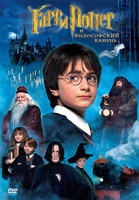
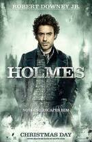

Жизнь десятилетнего Гарри Поттера нельзя назвать сладкой: его родители умерли, едва ему исполнился год, а от дяди и тётки, взявших сироту на воспитание, достаются лишь тычки да подзатыльники. Но в одиннадцатый день рождения Гарри всё меняется. А уже через пару недель Гарри будет мчаться в поезде Хогвартс-экспресс навстречу новой жизни, где его ждут невероятные приключения и верные друзья
Талантливый выпускник Оксфорда, применив свой уникальный ум и невиданную дерзость, придумал нелегальную схему обогащения с использованием поместья обедневшей английской аристократии. Однако когда он решает продать свой бизнес влиятельному клану миллиардеров из США, на его пути встают не менее обаятельные, но жесткие джентльмены.
Четверо подростков оказываются внутри игры «Джуманджи». Их ждет схватка с носорогами, черными мамбами, а на каждом шагу будет подстерегать бесконечная череда ловушек и головоломок. Чтобы пройти игру и остаться в живых, им придется перевоплотиться в персонажей игры

Детективный боевик Гая Ричи, в основе которого лежат произведения Артура Конан Дойля о Шерлоке Холмсе, хотя основной сюжет оригинален. Премьера фильма состоялась 24 декабря (в России — 31 декабря) 2009 года. Роберт Дауни-мл. (англ.)